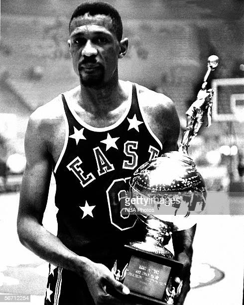

BIOGRAGIA de William Felton Russell. Apodos: "Bill", "The hawk", "Russ"
Fue un baloncestista estadounidense que disputó trece temporadas en los Boston Celtics de la NBA.
Con de 2,08 metros de altura, jugaba en la posición de pívot. Fue el máximo estandarte de la dinastía de los Celtics que ganaron once campeonatos en trece años y en ese lapso disputaron diez finales consecutivas (logrando ocho títulos consecutivos).
Fue en cinco ocasiones nombrado MVP de la temporada (1958, 1961, 1962, 1963, 1965), cuatro veces máximo reboteador del año, aunque extrañamente solamente figuró en tres ocasiones en el mejor quinteto de la NBA, a las que se agregan otras ocho apariciones en el segundo quinteto.
Antes de su carrera profesional ganó en 1955 y 1956 dos campeonatos universitarios de la NCAA con el equipo de los San Francisco Dons de la Universidad de San Francisco y la medalla de oro en los Juegos Olímpicos de Melbourne 1956 como capitán de la selección de baloncesto de Estados Unidos.
Estas son algunos momentos iconicos
